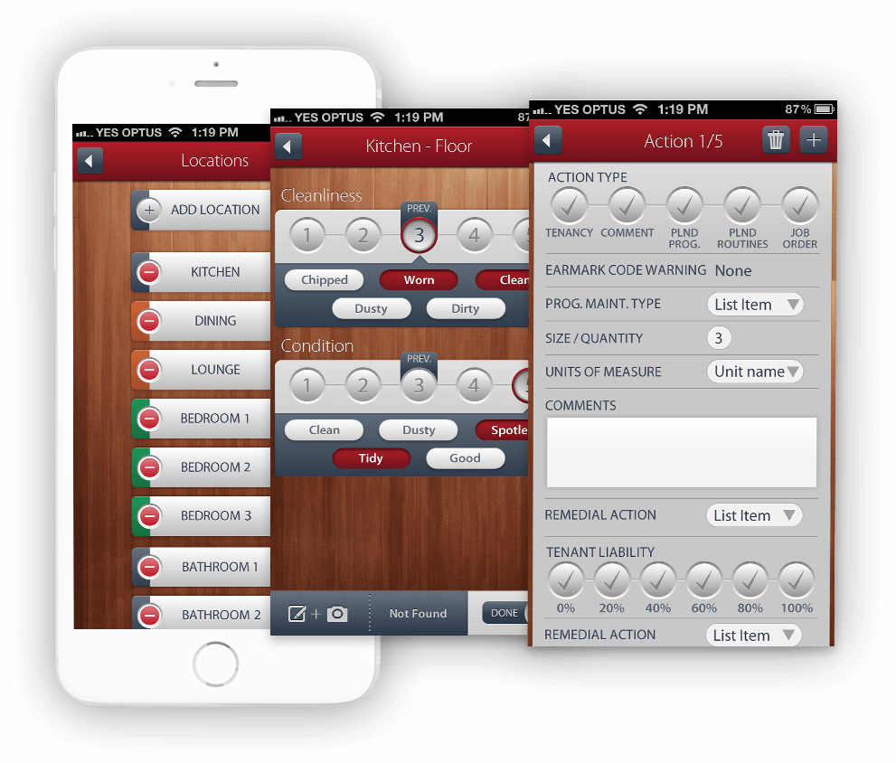

Western Australian (WA) Department of Housing provides affordable land and housing in WA, making a substantial contribution to the State's economic and social well-being.
Transforming the way
to conduct housing inspections
-
Challenge
The department’s property inspectors were using a clunky PDA application. They wanted to replace the legacy system.
-
Solution
Not just transferring the same inefficiencies to a larger screen, Enabled worked with WA Housing to transform their aging PDA-based system into a real-time inspection app for the assessment of government provided housing.
-
Results
The app resulted in significant productivity improvement & engagement for field staff while ensuring compliance with regulatory requirements.
Enabling field
staff mobility
Business Challege
When Enabled was referred by Telstra’s mobility team to the Western Australian Department of Housing, the department’s property inspectors were making use of a clunky PDA application.
Uptake of the PDA device throughout the business was limited, and feedback from WA Housing staff pointed to numerous issues with both the device and application itself. Further to this, the Windows Mobile platform had become obsolete and it was no longer possible to source new PDA devices.
Exploring the
pain points
This existing application required synchronisation via a serial cable at the beginning of the day with an allocation of jobs to be accomplished before the day’s end. This start-of-day ritual meant that there was no flexibility to adapt the inspection schedule while in the field.

There was also a need to establish more comparable results between periodic inspections. As the PDA allowed evaluations with freeform text, each inspector could establish their own vocabulary resulting in a mainly qualitative assessment with a high degree of comparative ambiguity.
From the outset of the project, Enabled also understood that the Department were looking to also replace their legacy management system, but the move to a more robust mobile solution should not be slowed down by this longer term migration.
At the time, the 3G iPad 2 was identified as the most appropriate device. As a proof of concept to demonstrate its feasibility of apps on the smaller screen, Enabled also offered the same app but formatted for the iPhone, this was readily accepted by the Department.
Steps taken
- Process mapping
- Technology selection
- Solution design
“ It gives management the information they need so that we can actually make good evidence based decisions."
Grahame Searle, Director General, Department of Housing, WA
Development
Not simply transferring the same inefficiencies from a PDA device to a larger screen, Enabled redesigned the Inspection system from the ground up.
We also enabled complex property assessment with a shared vocabulary system, smart reports, workflow management, security features and much more.
As the app would be used by mobile staff out in the field, communication was vital. Considering all four elements of WA Housing’s inspection solution, we set up the Web Services and integrated the solution into the existing ERP system.
Steps taken
- UX, UI design
- App development
- Systems integration
Results
The project not only resulted in an app, but also a new way of doing things, with benefits such as:
- Significant productivity improvement for field staff.
- Compliance with regulatory requirements.
- Increased field employee engagement.
“We are very happy with how the App works and it has transformed the way Housing Inspections are now conducted."
Graham Barron, A/Chief Information Officer | ICT Services, Department of Housing, WA